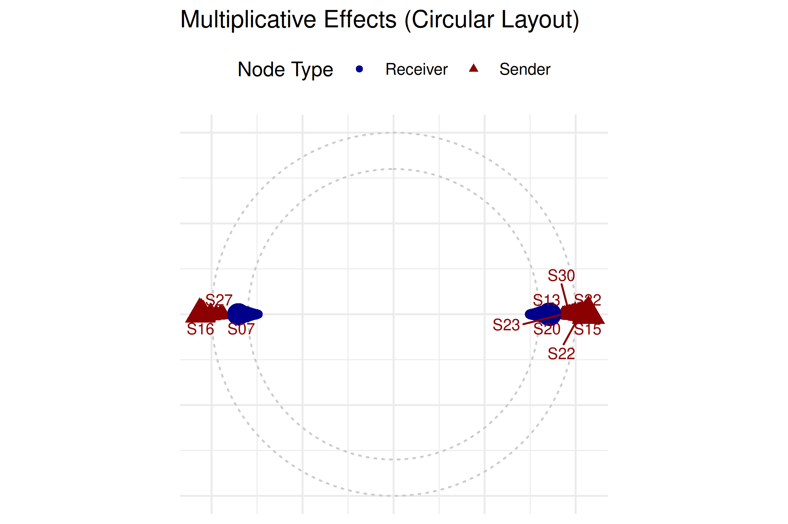
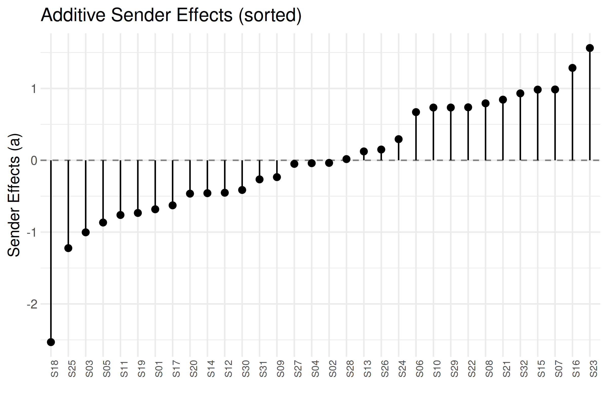

lame Overview
Cassy Dorff, Shahryar Minhas, and Tosin Salau
2026-06-04
Source:vignettes/lame-overview.Rmd
lame-overview.RmdPackage Overview
The lame package provides tools for fitting
Longitudinal Additive and
Multiplicative Effects models to
network data observed over time. If you study relationships between
actors (countries trading with each other, legislators co-sponsoring
bills, students forming friendships across semesters) and you have
repeated observations of those relationships, lame is
designed for you.
The modeling approach builds on the Additive and Multiplicative
Effects (AME) framework developed by Peter Hoff, whose amen package (GitHub) provides the
foundational implementation for cross-sectional network analysis. The
lame package extends this framework in several
directions:
-
Longitudinal and replicated data: While
amenfocuses on single networks (withame()) or basic replicated designs (withame_rep()),lameis built from the ground up for panel data, networks observed across multiple time periods, potentially with actors entering and leaving the sample. -
Dynamic effects: Actors’ positions in latent space
and their baseline activity levels can evolve over time via AR(1)
processes (
dynamic_uvanddynamic_ab), letting you model how network structure changes rather than assuming it is fixed. - C++ acceleration: Core sampling routines are implemented in Rcpp/RcppArmadillo for faster computation, which matters when you have many time periods or actors.
- Bipartite networks: Explicit support for two-mode networks (e.g., countries and treaties, users and products) with separate latent spaces for row and column nodes.
-
ggplot2-based diagnostics: Built-in visualization
functions (
trace_plot,gof_plot,ab_plot,uv_plot) return standard ggplot2 figures you can theme and extend. -
Standard S3 methods:
coef(),confint(),fitted(),residuals(),predict(), andsimulate()work as you would expect from any R model object.
The package is part of the netify-verse, and it works
with the netify
package for data preparation.
Migrating from amen
Both amen and lame export an
ame() function. If you load both packages in the same
session, lame prints a .onAttach startup
message so you know unqualified ame(...) calls dispatch to
whichever package was attached last; use lame::ame(...) or
amen::ame(...) to be explicit. The table below maps the
breaking differences for old amen scripts:
| Topic | amen::ame() |
lame::ame() / lame::lame()
|
Old code breaks? |
|---|---|---|---|
| Family strings |
"nrm", "bin", "ord",
"cbin", "frn", "rrl",
"tobit"
|
"normal", "binary",
"ordinal", "cbin", "frn",
"rrl", "tobit", "poisson"
|
No for ame() / lame() (short forms
"nrm", "bin", "ord",
"pois", "tob" are accepted as aliases via
cli::cli_inform() – two informational lines per call,
recommending the full name; old scripts run unchanged). For
ame_als() / lame_als() (MCMC-free estimator)
the same short aliases ("nrm", "bin",
"ord", "pois", "tob") are
accepted with an informational message, but the estimator
supports only "normal", "binary", and
"poisson". The censoring / rank families
"ordinal", "tobit", "cbin",
"frn", and "rrl" are rejected with a direct
error pointing to ame() / lame() (MCMC), which
is the posterior-sampling path for those families. |
| Bipartite rank | single R
|
R (square) or separate R_row /
R_col (bipartite); single R still
accepted |
No (old R calls work; R_row /
R_col is new) |
| Verbosity flag | print = TRUE/FALSE |
verbose = TRUE/FALSE |
No (deprecation warning) |
fit$BETA shape (static) |
[n_stored, p] matrix |
[n_stored, p] matrix |
No (identical) |
fit$BETA shape (dynamic_beta) |
not available |
[n_stored, p, T] 3-D array |
New feature, but watch out: under the new shape
apply(fit$BETA, 2, mean) still returns a
length-p vector that looks like the old amen
result, while silently averaging across both iterations and time. Use
coef(fit) (returns [p, T] for dynamic,
length-p for static) or branch on
length(dim(fit$BETA)). See Dynamic Effects. |
| Longitudinal data |
ame_rep() for replicates |
lame() with a list of T matrices and
optional dynamic_uv / dynamic_ab /
dynamic_beta
|
Refit via lame()
|
| GOF output |
fit$GOF matrix |
fit$GOF (cross-sectional) or list-of-matrices per
period (longitudinal) |
Yes for longitudinal scripts |
| S3 methods |
summary(), plot()
|
adds coef(), confint(),
fitted(), residuals(), predict(),
simulate(), autoplot(),
tidy()
|
No (additive) |
loo / waic
|
not available |
save_log_lik = TRUE plus loo::loo(fit) /
loo::waic(fit) S3 methods; see Dynamic Effects
|
N/A (new feature) |
broom::tidy() |
not available |
tidy.ame() / tidy.lame() registered
against generics::tidy
|
N/A (new feature) |
broom::glance() |
not available |
glance.ame() / glance.lame() registered
against generics::glance; returns nobs,
n_actors, n_periods, n_stored,
family, mode, R,
dynamic_uv, dynamic_ab,
dynamic_beta, elpd_loo. Pairs with
tidy() for
modelsummary::modelsummary(fit). |
N/A (new feature) |
The most common porting fix is family = "nrm" →
family = "normal" and family = "bin" →
family = "binary". Everything else either still works
unchanged or surfaces a deprecation warning rather than an error.
Application: Dutch College Friendships
To see how lame works in practice, we analyze the
Dutch college friendship network (van de Bunt, van
Duijn, and Snijders 1999), a panel of 32 students who arrived as
strangers and rated each other’s friendship at seven time points. (We
drop the cold-start first wave, when the students barely knew each other
and almost no ties exist; six waves remain.) The substantive question is
whether students sort by gender, smoking status, and academic program,
and whether residual clustering remains once those covariates are
absorbed.
The dataset includes:
-
Y: directed friendship ratings on a -1 to 4 scale
(-1 a negative/troubled relationship, 0 no or uncertain tie, 1-4
increasing friendship). We binarize any positive rating to a tie
(
(Y > 0) * 1), so the rare -1 ratings fold in with 0 as “no tie”. -
X: three node-level attributes:
male,smoker,program. - We construct three dyadic homophily indicators from
the node attributes:
same_male,same_smoker,same_program.
library(lame)
library(ggplot2)
set.seed(6886)
data("dutchcollege")
n <- nrow(dutchcollege$Y)
T_all <- dim(dutchcollege$Y)[3]
actor_names <- sprintf("S%02d", seq_len(n))
# binarize and drop the cold-start wave (t = 1 has almost no ties)
Y <- lapply(2:T_all, function(t) {
Yt <- (dutchcollege$Y[, , t] > 0) * 1
diag(Yt) <- NA
rownames(Yt) <- colnames(Yt) <- actor_names
Yt
})
names(Y) <- paste0("t", 2:T_all)
# nodal covariates passed identically as sender and receiver
X_node <- dutchcollege$X
rownames(X_node) <- actor_names
Xrow <- lapply(seq_along(Y), function(t) X_node)
Xcol <- Xrow
# dyadic homophily indicators
same_male <- outer(X_node[, "male"], X_node[, "male"], "==") * 1
same_smoker <- outer(X_node[, "smoker"], X_node[, "smoker"], "==") * 1
same_program <- outer(X_node[, "program"], X_node[, "program"], "==") * 1
Xdyad_one <- array(0, dim = c(n, n, 3),
dimnames = list(actor_names, actor_names,
c("same_male", "same_smoker", "same_program")))
Xdyad_one[, , 1] <- same_male
Xdyad_one[, , 2] <- same_smoker
Xdyad_one[, , 3] <- same_program
Xdyad <- lapply(seq_along(Y), function(t) Xdyad_one)The friendship network’s average density rises across the panel as students settle in, though the trajectory is not monotone (density bounces between roughly 0.40 and 0.63 across the six waves):
sapply(Y, function(y) round(mean(y, na.rm = TRUE), 2))
#> t2 t3 t4 t5 t6 t7
#> 0.40 0.52 0.47 0.49 0.63 0.51Fitting the Model
We fit a binary probit AME model with sender random effects
(rvar), receiver random effects (cvar), dyadic
correlation (dcor), and a one-dimensional latent space
(R = 1). The random effects capture sender heterogeneity
(some students simply nominate more friends) and receiver heterogeneity
(some students are nominated more often), while the latent space picks
up residual clustering: students who befriend similar people for reasons
that the observed covariates do not capture. We use R = 1
because with only 32 students a two-dimensional latent space competes
with the three dyadic homophily indicators for the same signal and the
chain mixes poorly on the dyadic coefficients; R = 1
resolves that cleanly and the substantive results are nearly
identical.
fit <- lame(
Y = Y,
Xdyad = Xdyad, # dyadic homophily indicators
Xrow = Xrow, # sender covariates
Xcol = Xcol, # receiver covariates
family = "binary", # binary probit model
rvar = TRUE, # sender random effects
cvar = TRUE, # receiver random effects
dcor = TRUE, # dyadic correlation (reciprocity)
R = 1, # 1-D multiplicative latent space
symmetric = FALSE, # friendships are directed
burn = 500, # burn-in
nscan = 4000, # post-burn-in iterations
odens = 10, # thinning -> 400 stored draws
verbose = FALSE,
plot = FALSE
)Interpreting the Results
summary(fit)
#>
#> === Longitudinal AME Model Summary ===
#>
#> Call:
#> [1] "Y ~ dyad(same_male, same_smoker, same_program) + row(male, smoker, program) + col(male, smoker, program) + a[i] + b[j] + rho*e[ji] + U[i,1:1] %*% V[j,1:1], family = 'binary'"
#>
#> Time periods: 6
#> Family: binary
#> Mode: unipartite
#>
#> Note: STATIC fit pooled across 6 time periods --
#> U, V, a, b are time-invariant; per-period predictions vary
#> only through per-period covariates. For time-varying effects,
#> refit with dynamic_uv = TRUE and/or dynamic_ab = TRUE.
#>
#> Regression coefficients:
#> ------------------------
#> Estimate StdError z_value p_value CI_lower CI_upper
#> intercept -2.878 1.211 -2.377 0.017 -5.252 -0.598 *
#> male_row 0.942 0.418 2.251 0.024 0.211 1.762 *
#> smoker_row -0.951 0.341 -2.789 0.005 -1.589 -0.307 **
#> program_row 0.499 0.232 2.154 0.031 0.061 0.945 *
#> male_col 0.992 0.267 3.713 0 0.437 1.513 ***
#> smoker_col -0.062 0.217 -0.288 0.774 -0.527 0.337
#> program_col 0.15 0.145 1.031 0.302 -0.113 0.438
#> same_male_dyad 0.446 0.058 7.65 0 0.333 0.563 ***
#> same_smoker_dyad 0.142 0.056 2.532 0.011 0.037 0.244 *
#> same_program_dyad 0.577 0.053 10.846 0 0.47 0.671 ***
#> ---
#> Signif. codes: 0 '***' 0.001 '**' 0.01 '*' 0.05 '.' 0.1 ' ' 1
#> Note: stars are a visual hint from posterior mean / SD only; for inference use the credible intervals.
#>
#> Variance components:
#> -------------------
#> Estimate StdError
#> va 0.802 0.221
#> cab 0.292 0.108
#> vb 0.269 0.079
#> rho 0.320 0.041
#> ve 1.000 0.000
#> (va = sender, cab = sender-receiver covariance, vb = receiver,
#> rho = dyadic correlation, ve = residual variance)A lot lands at once, so let’s walk through it.
Intercept. The probit intercept is the latent linear
predictor when every covariate is zero and every random effect
sits at its mean. That is not the same as the average student: the
covariates here are uncentered, and program in particular
is coded 2-4 and is never zero, so “all covariates zero” extrapolates
well outside the observed data. The familiar qnorm(density)
rule of thumb describes the predictor at the average covariate
profile, not at the all-zero corner. The two reconcile exactly once you
add back the mean covariate contribution:
bhat <- colMeans(fit$BETA)
slice_means <- apply(fit$X[[1]], 3, mean, na.rm = TRUE) # mean of each design column
centroid_lp <- sum(bhat * slice_means[names(bhat)]) # predictor at the average profile
c(intercept = unname(bhat["intercept"]),
centroid_lp = centroid_lp,
qnorm_density = qnorm(mean(unlist(Y), na.rm = TRUE)))
#> intercept centroid_lp qnorm_density
#> -2.87795598 -0.08348618 0.00842291The intercept itself is strongly negative, but the predictor at the
average covariate profile (centroid_lp) sits close to
qnorm(density) – the uncentered covariates account for
nearly the entire gap, leaving only a small shift from the random-effect
variance. The intercept absorbs the mean covariate contribution; it is
not a baseline probability. If you want the intercept to read directly
as a baseline, center the covariates before fitting. Either way, read
predicted probabilities on the response scale off
predict(fit, type = "response").
Homophily. The three dyadic coefficients
(same_male, same_smoker,
same_program) measure whether students of the same type are
more likely to be friends, holding the sender, receiver, and latent
positions fixed. Positive values mean homophily; credible intervals that
exclude zero indicate that the direction of the association is
well-identified. Program homophily tends to be the strongest of the
three in this network, consistent with the substantive expectation that
students bond around shared coursework.
Nodal covariates. male_row /
male_col measure whether male students are unusually active
senders or popular receivers, and similarly for smoker and
program. With only 32 students, the credible intervals on
individual nodal effects are wide; treat the sign as suggestive, the
magnitude with caution.
Variance components. va (sender
variance) and vb (receiver variance) quantify how much
students differ in sociability and popularity beyond what the covariates
explain. The dyadic correlation rho captures reciprocity:
values away from zero indicate that ties tend to be mutual. In
friendship networks rho > 0 is the rule rather than the
exception.
Checking Convergence
The model is estimated via MCMC, so trace plots and posterior-density
plots are useful checks. The trace_plot function shows the
sampled values over iterations (top panels) and the corresponding
posterior densities (bottom panels) for each parameter.
trace_plot(fit, params = "beta")
Trace plots should bounce around a stable mean without long-term trends or sticky regions, and density plots should be smooth and unimodal. Numerically, common MCMC checks are split- < 1.01 for monitored parameters and bulk / tail ESS 400 per chain.
With 400 stored samples, the regression coefficients mix well at this
seed. The variance components mix more slowly: in the
summarise_draws table below, va carries the
highest
and the lowest ESS. Which parameter mixes worst is seed-dependent in a
short chain, so treat this fit as a compact worked example rather than a
final diagnostic run.
Bayesian-ecosystem diagnostics:
posterior::as_draws()
lame registers as_draws() methods so any
fit drops straight into the Stan-era diagnostic ecosystem
(posterior, bayesplot,
tidybayes). The reshape lifts the BETA and
VC blocks into a draws_array indexed by
iteration / chain / variable, which means
posterior::summarise_draws() gives you per-parameter
posterior mean, median, sd, MAD, 5%/95% quantiles,
split-,
and bulk / tail ESS in one call:
library(posterior)
#> This is posterior version 1.6.1
#>
#> Attaching package: 'posterior'
#> The following object is masked from 'package:lame':
#>
#> as_draws
#> The following objects are masked from 'package:stats':
#>
#> mad, sd, var
#> The following objects are masked from 'package:base':
#>
#> %in%, match
draws <- posterior::as_draws(fit) # draws_array [iter, chain, var]
posterior::summarise_draws(draws) # rhat, ess_bulk, ess_tail per param
#> # A tibble: 15 × 10
#> variable mean median sd mad q5 q95 rhat ess_bulk
#> <chr> <dbl> <dbl> <dbl> <dbl> <dbl> <dbl> <dbl> <dbl>
#> 1 intercept -2.88 -2.82 1.21 1.23 -4.91 -0.876 1.00 377.
#> 2 male_row 0.942 0.925 0.418 0.446 0.319 1.66 1.00 463.
#> 3 smoker_row -0.951 -0.916 0.341 0.317 -1.53 -0.420 1.00 347.
#> 4 program_row 0.499 0.509 0.232 0.216 0.116 0.889 0.998 359.
#> 5 male_col 0.992 0.990 0.267 0.235 0.561 1.44 0.998 462.
#> 6 smoker_col -0.0624 -0.0643 0.217 0.216 -0.393 0.274 1.00 301.
#> 7 program_col 0.150 0.159 0.145 0.143 -0.0801 0.388 1.00 369.
#> 8 same_male_dyad 0.446 0.444 0.0583 0.0538 0.352 0.546 1.00 330.
#> 9 same_smoker_dyad 0.142 0.146 0.0560 0.0551 0.0434 0.235 1.00 80.5
#> 10 same_program_dy… 0.577 0.578 0.0532 0.0506 0.488 0.659 1.01 203.
#> 11 va 0.802 0.762 0.221 0.197 0.517 1.24 1.11 6.94
#> 12 cab 0.292 0.279 0.108 0.0976 0.146 0.478 1.05 21.6
#> 13 vb 0.269 0.257 0.0785 0.0734 0.158 0.419 1.00 202.
#> 14 rho 0.320 0.322 0.0407 0.0436 0.249 0.381 1.00 115.
#> 15 ve 1 1 0 0 1 1 NA NA
#> # ℹ 1 more variable: ess_tail <dbl>A single-chain fit like this one has chain = 1, so
reduces to within-chain
split-,
which is informative about within-chain non-stationarity but not about
between-chain disagreement. For honest
across independently initialised chains, see the multi-chain section in
the dynamic-effects vignette.
Goodness of Fit
The gof_plot function compares observed network
statistics to their posterior predictive distributions. This tells us
whether the model can reproduce key structural features of the data, not
just the dyad-level relationships, but emergent properties like how much
actors vary in their degree (heterogeneity), whether friends-of-friends
tend to be friends (transitivity), and whether ties tend to be
reciprocated (dyadic dependence).
gof_plot(fit)![Longitudinal goodness-of-fit panels for the Dutch college fit: each facet plots one network statistic (Sender Degree Heterogeneity, Receiver Degree Heterogeneity, Dyadic Dependence, Triadic Dependence, Transitivity) across the six time periods. The observed series is a solid orange line with filled orange points; the posterior-predictive median is a dashed dark line; the 95 percent credible interval is a grey ribbon. The three elements differ on both colour and linetype, so the comparison survives grayscale printing and colour-blind viewing. Observed series falling outside the band flag structural features the model is missing.](lame-overview_files/figure-html/overview-gof-1.png)
For a longitudinal model, gof_plot shows these
statistics across time. The figure encodes three series on each panel
using both colour and linetype redundantly: the observed series
is a solid orange line with filled orange points, the
posterior-predictive median is a dashed dark line, and
the 95% credible interval is a grey ribbon (the width
is controlled by the credible.level argument). When the
observed series falls inside the ribbon, the model is reproducing that
aspect of the network; when it falls outside, the model is missing
something. Falling outside is itself a substantive finding about the
data-generating process, not a failure to report.
The panel-strip headers are the human-readable labels
(Sender Degree Heterogeneity, etc.). fit$GOF
is a named list whose elements are sd.rowmean,
sd.colmean, dyad.dep, cycle.dep
(cyclic triads), and trans.dep; user-facing aliases for
gof_plot(..., statistics = ...) are sd.row,
sd.col, dyad.dep, triad.dep,
trans.dep.
Reading the figure honestly: the Dutch college fit reproduces the
average level of reciprocity and most of the cyclic-triad structure but
under-predicts sender degree heterogeneity, transitivity, and (at the
panel ends) receiver heterogeneity. The observed Sender Degree
Heterogeneity series sits above the upper edge of the 95% band at five
of the six periods (inside the band only at
);
some students nominate many more friends than the additive sender effect
plus latent
can absorb. Transitivity is under-predicted at every period – the
observed value sits above the upper edge of the band at
through
– so triangle closure is systematically too low under the latent space.
Receiver Degree Heterogeneity is above the band at
,
inside at
and
,
and below the band at
and
.
The Triadic Dependence panel (cyclic triads, cycle.dep)
sits inside the band at five of the six periods (outside only at
).
Dyadic Dependence (reciprocity) is the most variable: above the band at
and
(and marginally at
),
below at
and
,
inside only at
.
This is the standard signature of a latent-space model on a
friendship network. AME assumes conditional dyadic independence: given
the additive and multiplicative effects, dyads are independent, so
triangle closure has to be soaked up by clustering of the latent
positions
.
ERGMs handle triangle closure directly via terms like gwesp
or triangle. The two model classes are complementary. ERGM
is the right answer for triangle-closure questions; AME is the right
answer when the analyst wants stable, non-degenerate estimates with
explicit actor heterogeneity and a coherent posterior to forecast or
simulate from.
Posterior-predictive temporal-trend test:
gof_temporal()
The figure read above is qualitative. For a scalar
posterior-predictive p-value on the temporal trend in a chosen
network statistic, gof_temporal() complements
gof_plot(). It computes the chosen statistic at each
observed period, fits an OLS slope on period index, draws
posterior-predictive replicate panels via simulate(fit),
recomputes the slope in each replicate, and returns a two-sided
Gelman-style posterior-predictive p-value defined as
2 * min(p_up, 1 - p_up), so it runs from 0 (observed slope
in the extreme tail) up to 1 (observed slope dead-centre). A static fit
on truly trending data yields p_pp near 0 (the observed
slope is unreachable); a fit that captures the trend yields a
p_pp well away from 0 (the observed slope is central in the
predictive distribution).
# density rises across the panel on net (the network gets denser as
# students settle in, though the trajectory is not monotone), so it is the
# natural temporal-trend target.
gt_density <- gof_temporal(fit, stat = "density", n_rep = 100, seed = 6886)
gt_density # prints stat, observed slope, n_rep, and the p_pp
#>
#> ── Temporal-trend posterior-predictive check ──
#>
#> • Statistic: "density"
#> • Observed slope (per-period): 0.025
#> • Replicates: 100
#> • Posterior-predictive p-value (two-sided): 0
#> Observed temporal trend is incompatible with the fitted model.
# reciprocity is the natural second target for a directed network.
gt_recip <- gof_temporal(fit, stat = "reciprocity", n_rep = 100, seed = 6886)
gt_recip
#>
#> ── Temporal-trend posterior-predictive check ──
#>
#> • Statistic: "reciprocity"
#> • Observed slope (per-period): -0.0306
#> • Replicates: 100
#> • Posterior-predictive p-value (two-sided): 0
#> Observed temporal trend is incompatible with the fitted model.A p_pp of 0 on density says the static fit
cannot reproduce the empirical net densification slope (about +0.025 per
period in our run); that is the expected diagnostic for a fit without
dynamic_beta or time-varying covariates and is consistent
with the per-period mass shift in gof_plot(). The
reciprocity check tells the same story in the opposite direction: the
static fit also rejects the observed reciprocity slope
(p_pp near 0), because reciprocity actually drifts
downward across the panel (slope about
per period) and the static
cannot track that drift. Both checks are pointing at the same structural
mismatch: model parameters that are constant across periods cannot
reproduce period-to-period drift in either marginal quantity. The
companion diagnostic detect_change_point() reports a
heuristic tail-ratio score comparing the posterior path of each
dynamic_beta coefficient to its AR(1) prior null. It
requires a fit with dynamic_beta active and is therefore
not applicable to the static fit shown here; the worked example lives in
the Dynamic Effects vignette.
Latent Space
The multiplicative effects capture patterns of association that go
beyond what the covariates and additive effects explain. The
uv_plot function visualizes these latent positions. Because
we fit R = 1, the latent space is one-dimensional: each
student’s sender position (triangle) and receiver position (circle) is a
single number, and uv_plot lays them out along one axis
(the two reference circles are drawn only for scale). Students who land
near each other share friendship-formation patterns the covariates and
additive effects miss; sign separates the two latent groups. With
R = 2 the same call would spread the positions across a
genuine two-dimensional plane.
uv_plot(fit) +
ggtitle("Dutch college friendship: multiplicative effects") +
theme_bw() +
theme(
panel.border = element_blank(),
legend.position = "none",
axis.text = element_blank(),
axis.title = element_blank(),
panel.grid = element_blank()
)
With R = 1 the latent space is one-dimensional, so the
positions fall along a single axis and the two circles serve only as a
reference scale; marker size encodes magnitude. Students at the extremes
– and those whose sender (triangle) and receiver (circle) positions
diverge – have the most distinctive friendship-formation patterns that
the covariates and additive effects do not explain on their own. With
R = 2 the same call spreads the positions across a genuine
plane.
Extracting Latent Positions
If you need the estimated latent positions in a tidy format (for
custom plots, merging with external data, or exporting to other tools),
the latent_positions() function returns a data frame:
lp <- latent_positions(fit)
#> ℹ `posterior_sd` is "NA" because U/V samples were not saved.
#> ℹ To get posterior SDs, refit with `posterior_opts = posterior_options(save_UV
#> = TRUE)`.
#> This message is displayed once per session.
head(lp)
#> actor dimension time value posterior_sd type
#> 1 S01 1 1 -1.3221753 NA U
#> 2 S02 1 1 -0.1260440 NA U
#> 3 S03 1 1 0.2910177 NA U
#> 4 S04 1 1 0.3998524 NA U
#> 5 S05 1 1 0.5061699 NA U
#> 6 S06 1 1 0.8633610 NA UEach row gives one actor’s position on one latent dimension at one
time point; a type column distinguishes the sender position
("U") from the receiver position ("V"), so a
directed fit returns two rows per actor per dimension. For a static fit
like this one the positions do not change over time, so
latent_positions() returns a single slice (labelled
time = 1) that applies to every period rather than
repeating it. For dynamic models (dynamic_uv = TRUE),
positions evolve over time and latent_positions() returns
each time point separately (see the dynamic effects vignette).
When using dynamic latent positions, the latent space is only
identified up to rotation at each time point. The
procrustes_align() function aligns each time period’s
positions to the previous one, removing arbitrary rotations so that
trajectories across time are interpretable:
# procrustes alignment is useful for dynamic models.
# for a static model, positions are already aligned.
aligned <- procrustes_align(fit)
#> ℹ Latent positions are static (single time point). No alignment needed.
str(aligned$U)
#> num [1:32, 1] -1.322 -0.126 0.291 0.4 0.506 ...
#> - attr(*, "dimnames")=List of 2
#> ..$ : chr [1:32] "S01" "S02" "S03" "S04" ...
#> ..$ : NULLTidy-data round-trip via netify
lame integrates with the netify package via
the netify::to_amen(netlet, lame = TRUE) bridge: feed a
long-format edgelist (or any tidy network representation) through
netify::netify() and then pass the result of
to_amen() straight into lame() or
ame(). The lame = TRUE flag preserves the
per-period dyadic-covariate axis (required for longitudinal models).
Once the fit is built, tidy(), autoplot(), and
prediction_draws_long() give you
broom-/ggplot-/marginaleffects-ready output that composes naturally with
the rest of the tidyverse.
Entry: tidy edgelist → lame()
library(netify)
# 1. tidy edgelist -> netify
netlet <- netify::netify(
edges_long,
actor1 = "from", actor2 = "to", time = "year",
weight = "tie", dyad_vars = "distance",
symmetric = FALSE, mode = "unipartite",
output_format = "longit_array"
)
# 2. netify -> lame-ready list (lame = TRUE for longitudinal)
amen_in <- netify::to_amen(netlet, lame = TRUE)
# 3. fit (same Dutch-college style fit we built above)
fit <- lame(
Y = amen_in$Y,
Xdyad = amen_in$Xdyad,
Xrow = amen_in$Xrow,
Xcol = amen_in$Xcol,
family = "binary", R = 1,
burn = 500, nscan = 4000, odens = 10,
verbose = FALSE
)Exit: tidy(), autoplot(),
prediction_draws_long()
The rest of the round-trip runs against the fit object
built from the Dutch-college data above (no netify install
needed):
# tidy(fit) -> term / estimate / std.error / statistic / p.value /
# conf.low / conf.high; one row per coefficient (or per
# coefficient x period for dynamic_beta fits). The generic ships with
# lame so this runs without broom installed; when broom is on the path
# `broom::tidy(fit)` dispatches to the same method via
# generics::tidy registration.
tidy(fit)
#> # A tibble: 10 × 7
#> term estimate std.error statistic p.value conf.low conf.high
#> <chr> <dbl> <dbl> <dbl> <dbl> <dbl> <dbl>
#> 1 intercept -2.88 1.21 -2.38 1.75e- 2 -5.25 -0.598
#> 2 male_row 0.942 0.418 2.25 2.44e- 2 0.211 1.76
#> 3 smoker_row -0.951 0.341 -2.79 5.29e- 3 -1.59 -0.307
#> 4 program_row 0.499 0.232 2.15 3.13e- 2 0.0609 0.945
#> 5 male_col 0.992 0.267 3.71 2.05e- 4 0.437 1.51
#> 6 smoker_col -0.0624 0.217 -0.288 7.74e- 1 -0.527 0.337
#> 7 program_col 0.150 0.145 1.03 3.02e- 1 -0.113 0.438
#> 8 same_male_dyad 0.446 0.0583 7.65 2.00e-14 0.333 0.563
#> 9 same_smoker_dyad 0.142 0.0560 2.53 1.13e- 2 0.0367 0.244
#> 10 same_program_dyad 0.577 0.0532 10.8 0 0.470 0.671Coefficient tables: glance() + tidy()
-> modelsummary / gt /
kableExtra
lame ships both tidy.lame() and
glance.lame(), registered against
generics::tidy / generics::glance at load
time, so any broom-aware table package consumes a lame fit
directly. The most compact route is
modelsummary::modelsummary(fit), which uses
tidy() for the coefficient panel and glance()
for the goodness-of-fit footer:
# glance() returns the one-row model summary modelsummary uses for its
# lower panel: nobs, n_actors, n_periods, n_stored, family, mode, R,
# dynamic_uv / dynamic_ab / dynamic_beta, elpd_loo (NA unless save_log_lik=TRUE).
broom::glance(fit)
#> # A tibble: 1 × 13
#> nobs n_actors n_row_actors n_col_actors n_periods n_stored family mode R
#> <int> <int> <int> <int> <int> <int> <chr> <chr> <int>
#> 1 5952 32 NA NA 6 400 binary unip… 1
#> # ℹ 4 more variables: dynamic_uv <lgl>, dynamic_ab <lgl>, dynamic_beta <lgl>,
#> # elpd_loo <dbl>
# pass the fit straight to modelsummary -- tidy() drives the upper
# (coefficients) panel, glance() drives the lower (GOF) panel.
modelsummary::modelsummary(
list("Dutch college" = fit),
statistic = "conf.int",
gof_map = c("nobs", "n_actors", "n_periods", "n_stored",
"family", "R", "dynamic_uv", "dynamic_ab")
)| Dutch college | |
|---|---|
| intercept | -2.878 |
| [-5.252, -0.598] | |
| male_row | 0.942 |
| [0.211, 1.762] | |
| smoker_row | -0.951 |
| [-1.589, -0.307] | |
| program_row | 0.499 |
| [0.061, 0.945] | |
| male_col | 0.992 |
| [0.437, 1.513] | |
| smoker_col | -0.062 |
| [-0.527, 0.337] | |
| program_col | 0.150 |
| [-0.113, 0.438] | |
| same_male_dyad | 0.446 |
| [0.333, 0.563] | |
| same_smoker_dyad | 0.142 |
| [0.037, 0.244] | |
| same_program_dyad | 0.577 |
| [0.470, 0.671] | |
| Num.Obs. | 5952 |
| n_actors | 32 |
| n_periods | 6 |
| n_stored | 400 |
| family | binary |
| R | 1 |
| dynamic_uv | FALSE |
| dynamic_ab | FALSE |
Multiple fits compose into a side-by-side table the same way they
would for lm() / glm() – pass a named list,
one column per fit. Below we compare the full specification against a
no-latent-space variant (R = 0) to see how much of the
coefficient story is being soaked up by multiplicative effects:
fit_noUV <- lame(
Y = Y, Xdyad = Xdyad, Xrow = Xrow, Xcol = Xcol,
family = "binary", rvar = TRUE, cvar = TRUE, dcor = TRUE,
R = 0, # no latent space
symmetric = FALSE,
burn = 500, nscan = 4000, odens = 10,
verbose = FALSE, plot = FALSE
)
modelsummary::modelsummary(
list("AME (R = 1)" = fit, "Additive only (R = 0)" = fit_noUV),
statistic = "conf.int",
gof_map = c("nobs", "n_actors", "n_periods", "n_stored",
"family", "R", "dynamic_uv", "dynamic_ab")
)| AME (R = 1) | Additive only (R = 0) | |
|---|---|---|
| intercept | -2.878 | -2.693 |
| [-5.252, -0.598] | [-5.172, -0.408] | |
| male_row | 0.942 | 0.915 |
| [0.211, 1.762] | [0.133, 1.698] | |
| smoker_row | -0.951 | -0.853 |
| [-1.589, -0.307] | [-1.508, -0.199] | |
| program_row | 0.499 | 0.498 |
| [0.061, 0.945] | [0.040, 0.981] | |
| male_col | 0.992 | 0.973 |
| [0.437, 1.513] | [0.501, 1.457] | |
| smoker_col | -0.062 | -0.094 |
| [-0.527, 0.337] | [-0.499, 0.347] | |
| program_col | 0.150 | 0.104 |
| [-0.113, 0.438] | [-0.161, 0.387] | |
| same_male_dyad | 0.446 | 0.412 |
| [0.333, 0.563] | [0.298, 0.521] | |
| same_smoker_dyad | 0.142 | 0.191 |
| [0.037, 0.244] | [0.108, 0.275] | |
| same_program_dyad | 0.577 | 0.594 |
| [0.470, 0.671] | [0.501, 0.684] | |
| Num.Obs. | 5952 | 5952 |
| n_actors | 32 | 32 |
| n_periods | 6 | 6 |
| n_stored | 400 | 400 |
| family | binary | binary |
| R | 1 | 0 |
| dynamic_uv | FALSE | FALSE |
| dynamic_ab | FALSE | FALSE |
Reading down the R = 1 column versus the
R = 0 column shows how the latent space can redistribute
signal: when residual clustering is real, homophily coefficients move
toward zero in the AME column because structure that was loaded onto
same_program (etc.) is instead absorbed by the latent
positions. On this small panel (32 students, short chains) the movement
is modest and not uniform across the three homophily terms, with widely
overlapping credible intervals, so treat the comparison as illustrating
the mechanism rather than as a precise decomposition; the direction is
what to look for, not the exact shift.
Side-by-side MCMC and ALS in one table.
tidy.ame_als() and glance.ame_als() are
registered alongside the MCMC methods, so
modelsummary(list("MCMC" = fit, "ALS" = fit_als)) works
directly. The ALS row reports sandwich-based SEs when no bootstrap is
attached and bootstrap-based SEs when
ame_als(..., bootstrap = K) was used; the
se_source column on tidy(fit_als) records
which one supplied the interval.
If you prefer gt directly, the same tidy()
frame composes into any formatter; every column follows the broom
contract so kableExtra::kbl(),
flextable::flextable(), and gt::gt() all work
without a custom shim:
library(dplyr)
library(gt)
broom::tidy(fit) |>
mutate(`Estimate (95% CI)` = sprintf("%.3f (%.3f, %.3f)",
estimate, conf.low, conf.high)) |>
select(term, `Estimate (95% CI)`, p.value) |>
gt::gt() |>
gt::fmt_number(columns = p.value, decimals = 3) |>
gt::tab_header(title = "Posterior coefficient summary",
subtitle = "lame::lame() fit, Dutch college panel")
# autoplot.lame returns a horizontal coefplot for static fits and a
# ribbon-per-period for dynamic_beta fits, so the same call works for
# both. ggplot layers compose on top.
autoplot(fit) +
ggtitle("Dutch college friendship: posterior coefficients")
The same generic dispatches on which = "uv" (latent
positions) and which = "ab" (sender / receiver random
effects), so the entire random-effects diagnostic suite is reachable
from a single broom-style verb:
# which = "uv": delegates to uv_plot(); trajectory for dynamic_uv,
# snapshot for static -- returns a ggplot in both cases.
autoplot(fit, which = "uv")
# which = "ab": delegates to ab_plot() (sender side by default);
# call ab_plot(fit, effect = "receiver") for the column-side plot.
autoplot(fit, which = "ab")
# prediction_draws_long() returns a long-format data frame with
# .chain / .iteration / .draw / period / period_label / i / j /
# actor_i / actor_j / .value -- ready for tidybayes / marginaleffects.
pdl <- prediction_draws_long(fit, type = "response", n_draws = 50)
# the diagonal (i == j) is a self-tie, undefined in a friendship network, but
# the linear predictor is still numerically defined there -- drop it so the
# per-dyad summaries below cover only real (off-diagonal) pairs.
pdl <- pdl[pdl$i != pdl$j, ]
head(pdl, 3)
#> # A tibble: 3 × 10
#> .chain .iteration .draw period period_label i j actor_i actor_j
#> <int> <int> <int> <int> <chr> <int> <int> <chr> <chr>
#> 1 1 1 1 1 t2 2 1 S02 S01
#> 2 1 1 1 1 t2 3 1 S03 S01
#> 3 1 1 1 1 t2 4 1 S04 S01
#> # ℹ 1 more variable: .value <dbl>
dim(pdl)
#> [1] 297600 10Worked tidybayes-style summary
Because prediction_draws_long() already uses the
.draw / .value column convention, you can pipe
straight into a tidybayes::spread_draws()- style workflow,
or, since the columns are already in the right shape, go directly to
dplyr for per-dyad posterior summaries:
library(dplyr)
#>
#> Attaching package: 'dplyr'
#> The following objects are masked from 'package:stats':
#>
#> filter, lag
#> The following objects are masked from 'package:base':
#>
#> intersect, setdiff, setequal, union
pdl |>
group_by(actor_i, actor_j, period_label) |>
summarise(p_hat = mean(.value),
lo = quantile(.value, 0.025),
hi = quantile(.value, 0.975),
.groups = "drop") |>
head(3)
#> # A tibble: 3 × 6
#> actor_i actor_j period_label p_hat lo hi
#> <chr> <chr> <chr> <dbl> <dbl> <dbl>
#> 1 S01 S02 t2 0.0198 0.00000000242 0.135
#> 2 S01 S02 t3 0.0198 0.00000000242 0.135
#> 3 S01 S02 t4 0.0198 0.00000000242 0.135Because the .chain / .iteration /
.draw / .value columns already follow the
tidybayes / marginaleffects convention, the
data frame composes directly with
ggdist::stat_pointinterval(),
tidybayes::point_interval(), and
marginaleffects::posterior_draws() without an intermediate
spread_draws() call (that generic dispatches on draws /
brms / Stan model objects, not on a long data frame – the point of
returning the long shape directly is to skip that step).
Model comparison: loo::loo_compare() as a
one-liner
When two specifications are on the table – say a static-coefficient
baseline against a dynamic_beta = "dyad" variant – the
standard out-of-sample yardstick is the expected log pointwise
predictive density (elpd_loo) returned by
loo::loo(). Both fits need save_log_lik = TRUE
so loo() can read the pointwise log-likelihood matrix off
fit$log_lik; loo::loo_compare() then ranks
them in a single call:
fit_static <- lame(Y, Xdyad = Xdyad, family = "binary", R = 2,
burn = 500, nscan = 4000, odens = 10,
save_log_lik = TRUE, verbose = FALSE)
fit_dyn <- lame(Y, Xdyad = Xdyad, family = "binary", R = 2,
dynamic_beta = "dyad",
burn = 500, nscan = 4000, odens = 10,
save_log_lik = TRUE, verbose = FALSE)
cmp <- loo::loo_compare(loo::loo(fit_static), loo::loo(fit_dyn))
cmp
#> elpd_diff se_diff
#> fit_dyn 0.0 0.0
#> fit_static -8.4 3.1How to read the output. The top row is the preferred
model and always carries elpd_diff = 0. Each subsequent row
reports the difference in expected log pointwise predictive
density relative to the top model, together with the standard error of
that difference. In the printout above, fit_dyn beats
fit_static by 8.4 elpd units with an SE of 3.1, so
– the dynamic-beta specification is preferred at roughly the “2-sigma”
threshold. A natural way to phrase that comparison:
“The time-varying-coefficient model is preferred over the static specification by 8.4 elpd units (SE 3.1) on leave-one-out cross-validation, a
|elpd_diff|/SE ratio of 2.7. This is consistent with non-trivial drift in the dyadic coefficient over the panel window; the static specification is rejected at conventional thresholds.”
If |elpd_diff| were closer to its SE (say
-2.0 (SE 3.0)), the two specifications would be
predictively indistinguishable and the simpler static model would be the
defensible choice. The numbers in the printout above are illustrative;
the preferred model and the gap size depend on the data, the chain
length, and how well AME captures the structural features of the
network. A loo() run on a short Gibbs chain (the kind a
replicator typically uses while iterating on a specification) will also
commonly flag a few percent of dyads with Pareto
;
treat that warning as a sign that the importance-sampling approximation
is straining and either lengthen the chain or apply
loo::loo_moment_match() before relying on the
elpd_diff for inference.
Because family = "binary" is one of the six families
with an exact closed-form pointwise log-likelihood (normal,
binary, cbin, tobit,
poisson, ordinal), the absolute
elpd_loo values here are directly comparable to a
loo() result from a probit-link brms fit on
the same data, modulo
and ESS being satisfactory on the lame Gibbs sampler. For
frn and rrl, see the
log_lik_method = "observed_ghk" caveat in Dynamic
Effects.
Reproducibility: sessionInfo() and
renv.lock
MCMC posteriors depend on the RNG state, the C++ ABI of
RcppArmadillo, and minor internal changes in
lame itself across releases. A lame analysis
that a reviewer or your future self can reproduce captures both the seed
and the exact package versions you fit under. The conventional pattern
at the top of any replication script:
set.seed(6886)
fit <- lame(...)
sessionInfo() # paste into supplementary materialsFor long-running fits, save the fitted object together with the session record:
saveRDS(list(fit = fit, session = sessionInfo()),
file = "lame_fit_replication.rds")For long-term reproducibility, pin lame to a specific
commit hash (the package is pre-CRAN at the time of writing):
remotes::install_github("netify-dev/lame@<commit-sha>")or commit an renv.lock to your project repo so reviewers
can recreate the entire toolchain with renv::restore().
Random-seed + package version is the floor; commit hash +
renv.lock is the ceiling.
# this vignette's own session record -- copy the pattern verbatim
# into your replication archive
sessionInfo()
#> R version 4.3.3 (2024-02-29)
#> Platform: x86_64-pc-linux-gnu (64-bit)
#> Running under: Ubuntu 24.04.3 LTS
#>
#> Matrix products: default
#> BLAS: /usr/lib/x86_64-linux-gnu/blas/libblas.so.3.12.0
#> LAPACK: /usr/lib/x86_64-linux-gnu/lapack/liblapack.so.3.12.0
#>
#> locale:
#> [1] LC_CTYPE=C.UTF-8 LC_NUMERIC=C LC_TIME=C.UTF-8
#> [4] LC_COLLATE=C.UTF-8 LC_MONETARY=C.UTF-8 LC_MESSAGES=C.UTF-8
#> [7] LC_PAPER=C.UTF-8 LC_NAME=C LC_ADDRESS=C
#> [10] LC_TELEPHONE=C LC_MEASUREMENT=C.UTF-8 LC_IDENTIFICATION=C
#>
#> time zone: America/New_York
#> tzcode source: system (glibc)
#>
#> attached base packages:
#> [1] stats graphics grDevices utils datasets methods base
#>
#> other attached packages:
#> [1] dplyr_1.2.0 posterior_1.6.1 ggplot2_4.0.2 lame_1.1.0
#>
#> loaded via a namespace (and not attached):
#> [1] tidyselect_1.2.1 farver_2.1.2 loo_2.9.0
#> [4] S7_0.2.1 fastmap_1.2.0 tensorA_0.36.2.1
#> [7] tweenr_2.0.3 bayestestR_0.17.0 digest_0.6.39
#> [10] lifecycle_1.0.5 magrittr_2.0.4 compiler_4.3.3
#> [13] rlang_1.2.0 sass_0.4.10 tools_4.3.3
#> [16] utf8_1.2.6 yaml_2.3.12 data.table_1.18.0
#> [19] knitr_1.51 labeling_0.4.3 htmlwidgets_1.6.4
#> [22] plyr_1.8.9 RColorBrewer_1.1-3 abind_1.4-8
#> [25] tinytable_0.16.0 withr_3.0.2 purrr_1.2.1
#> [28] desc_1.4.3 grid_4.3.3 polyclip_1.10-7
#> [31] datawizard_1.3.1 future_1.69.0 globals_0.19.0
#> [34] scales_1.4.0 MASS_7.3-60.0.1 insight_1.5.0
#> [37] cli_3.6.6 rmarkdown_2.30 ragg_1.5.0
#> [40] generics_0.1.4 otel_0.2.0 future.apply_1.20.2
#> [43] performance_0.16.0 reshape2_1.4.5 parameters_0.28.3
#> [46] cachem_1.1.0 ggforce_0.5.0 stringr_1.6.0
#> [49] network_1.20.0 parallel_4.3.3 matrixStats_1.5.0
#> [52] vctrs_0.7.2 jsonlite_2.0.0 litedown_0.9
#> [55] patchwork_1.3.2 ggrepel_0.9.6 listenv_0.10.0
#> [58] systemfonts_1.3.1 tidyr_1.3.2 jquerylib_0.1.4
#> [61] glue_1.8.0 modelsummary_2.6.0 parallelly_1.46.1
#> [64] statnet.common_4.13.0 pkgdown_2.2.0 codetools_0.2-19
#> [67] distributional_0.6.0 stringi_1.8.7 gtable_0.3.6
#> [70] tables_0.9.33 tibble_3.3.1 pillar_1.11.1
#> [73] htmltools_0.5.9 R6_2.6.1 textshaping_1.0.4
#> [76] evaluate_1.0.5 lattice_0.22-5 backports_1.5.0
#> [79] broom_1.0.11 bslib_0.9.0 Rcpp_1.1.1-1.1
#> [82] coda_0.19-4.1 checkmate_2.3.4 xfun_0.55
#> [85] fs_1.6.6 pkgconfig_2.0.3What’s Next?
This vignette covered the core workflow: fitting, convergence, GOF, and visualization. For more specialized topics:
- Single networks (no time series)? See Your First AME Model for a detailed cross-sectional walkthrough
- Two types of nodes? See Bipartite Networks
- Evolving network structure? See Dynamic Effects
- Just want the quick version? See Getting Started
References:
Hoff, PD (2021) Additive and Multiplicative Effects Network Models. Statistical Science 36, 34–50.
van de Bunt, G. G., van Duijn, M. A. J., & Snijders, T. A. B. (1999). Friendship networks through time: An actor-oriented dynamic statistical network model. Computational & Mathematical Organization Theory, 5(2), 167–192.
Minhas, S., Dorff, C., Gallop, M. B., Foster, M., Liu, H., Tellez, J., & Ward, M. D. (2022). Taking dyads seriously. Political Science Research and Methods, 10(4), 703–721. doi:10.1017/psrm.2021.56